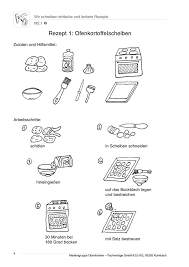

Unsere Rezept-Karte
Welche Rezepte gibt es – und seit wann?
| Rezept | Seit wann gibt es das? |
|---|---|
| Muffins | seit ca. 1700 (England) |
| Sachertorte | seit 1832 (Wien) |
| Topfennockerl | seit dem 19. Jahrhundert (Österreich/Bayern) |
Hier findest du 3 Rezepte zum Nachbacken 😊
| Rezept | Seit wann gibt es das? |
|---|---|
| Muffins | seit ca. 1700 (England) |
| Sachertorte | seit 1832 (Wien) |
| Topfennockerl | seit dem 19. Jahrhundert (Österreich/Bayern) |